Water, in motion.
Reference footage and the implemented river, pond and sea renderer.
The new clips use the production water and game vegetation/stone assets on controlled fixture terrain. Camera, lighting and environment differ from the supplied reference. Use the production-world views below to assess integration.
Previous surface / implemented surface
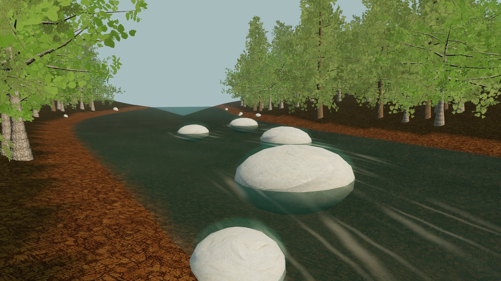
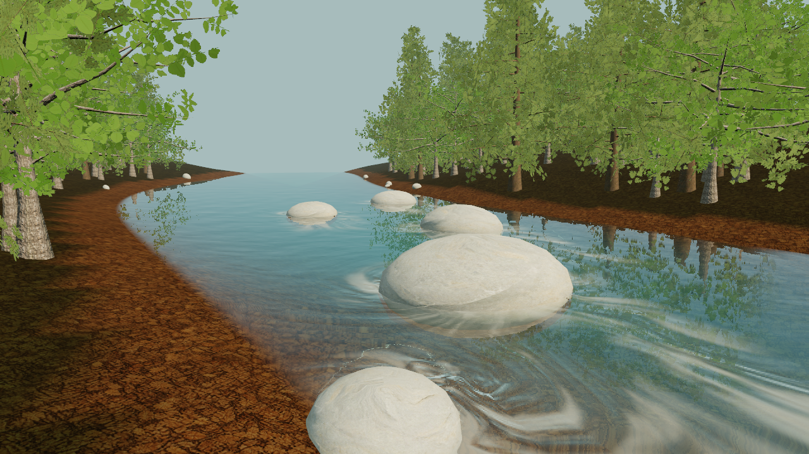
Inside the production environment
{kind=link}
{kind=link}
{kind=link}
Frame rate preserved within timer resolution
7 of nine median frame intervals match; the remaining views differ by at most 0.1 ms, one timer step. Both versions were alternated in the same loaded scene. The additional GPU cost and complete measurements are shown below.
RTX 4070 Laptop GPU · Edge WebGPU · 1280 × 720 · DPR 1 · production environment, excluding settlement entities/database/UI. Absolute FPS depends on scene and thermal/background load.
| View | Previous FPS | Implemented FPS | Frame difference | Previous → implemented GPU + compute |
|---|---|---|---|---|
| River current / near | 32.89 | 32.89 | 0.000 ms | 32.22 → 32.47 + 0.000 ms |
| River current / design | 41.15 | 41.15 | 0.000 ms | 25.12 → 25.04 + 0.000 ms |
| River current / far | 27.47 | 27.47 | 0.000 ms | 35.27 → 35.52 + 0.000 ms |
| Sheltered pond / near | 33.00 | 33.00 | 0.000 ms | 29.49 → 30.05 + 0.089 ms |
| Sheltered pond / design | 23.58 | 23.58 | 0.000 ms | 41.24 → 41.87 + 0.095 ms |
| Sheltered pond / far | 20.62 | 20.62 | 0.000 ms | 46.99 → 47.23 + 0.100 ms |
| Coastline / near | 41.49 | 41.32 | 0.100 ms | 21.31 → 21.59 + 0.106 ms |
| Coastline / design | 54.95 | 54.95 | 0.000 ms | 19.59 → 19.86 + 0.116 ms |
| Coastline / far | 41.15 | 40.98 | 0.100 ms | 26.65 → 26.92 + 0.127 ms |
Optical passes, rain and night
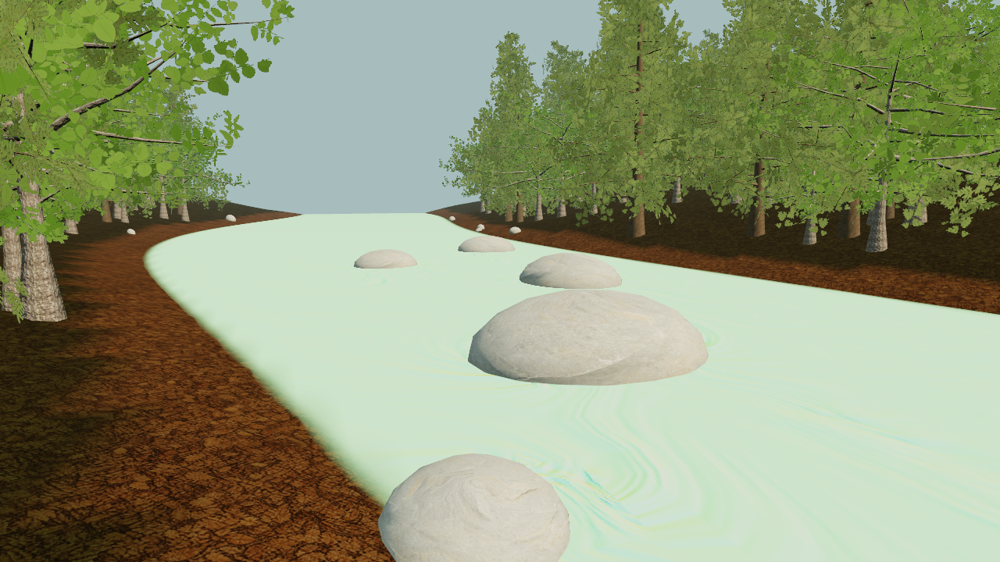
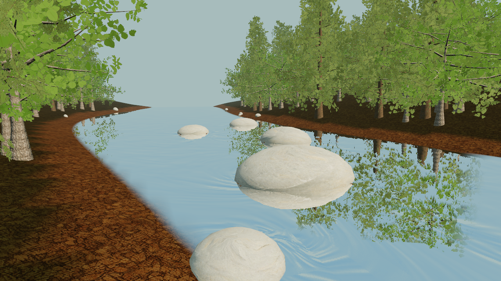
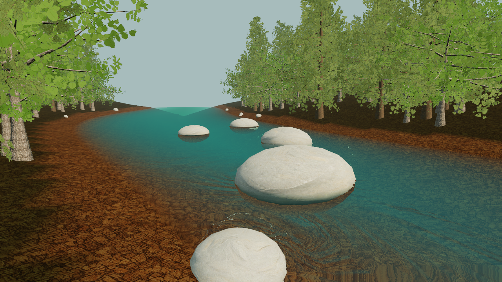
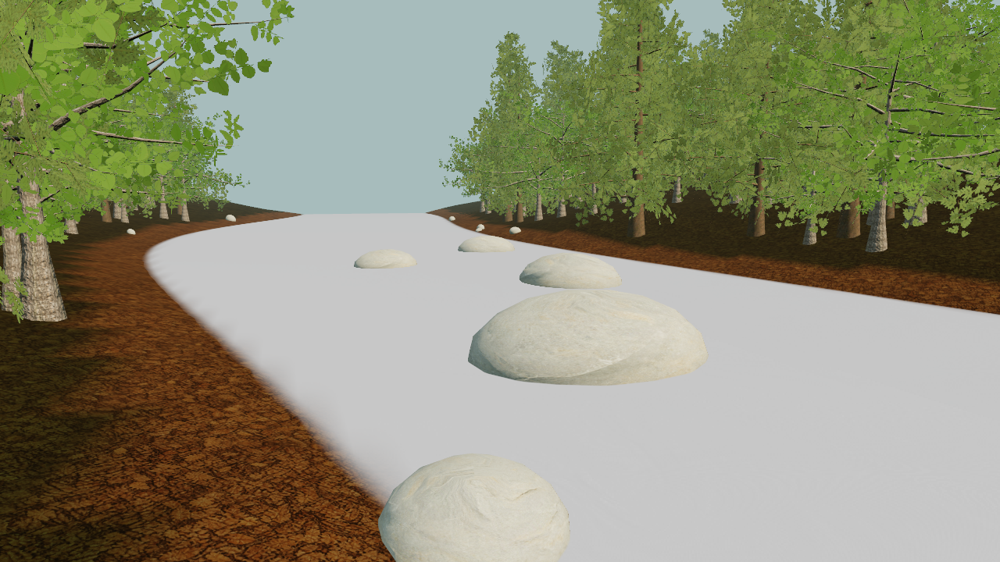
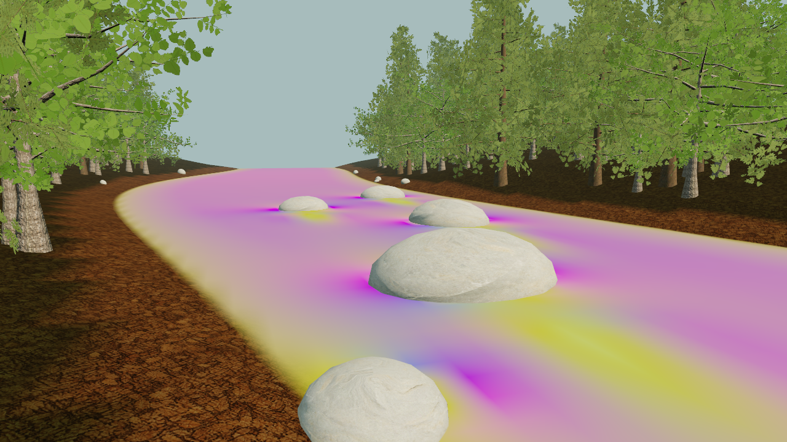
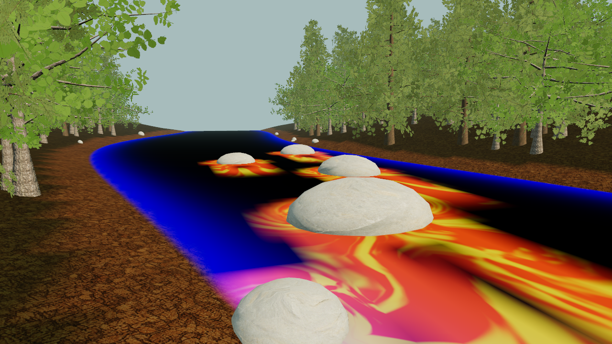
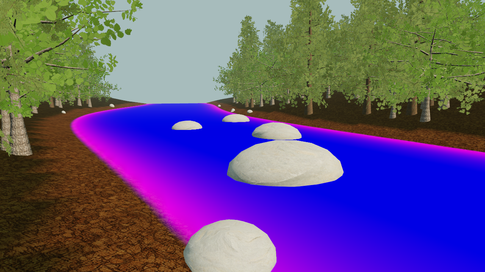
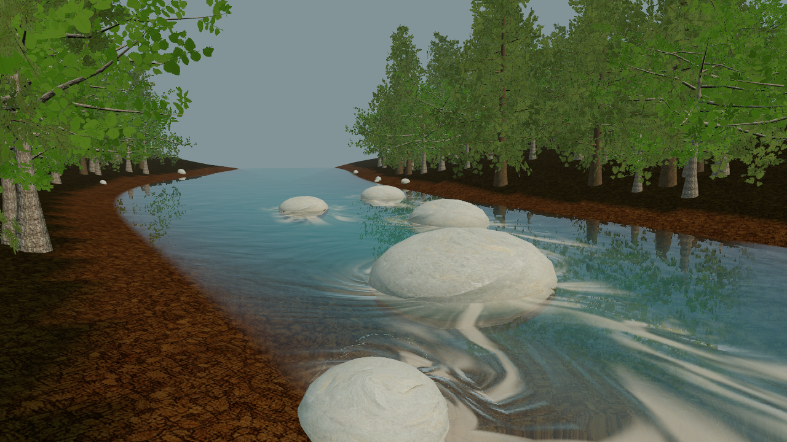
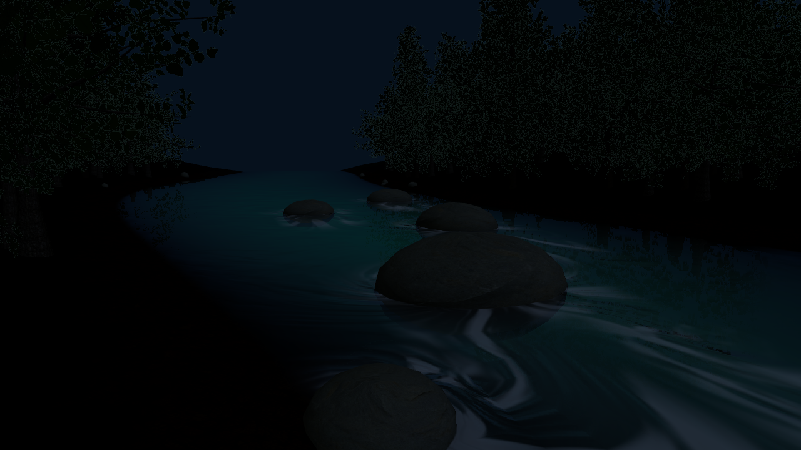